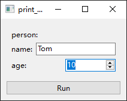
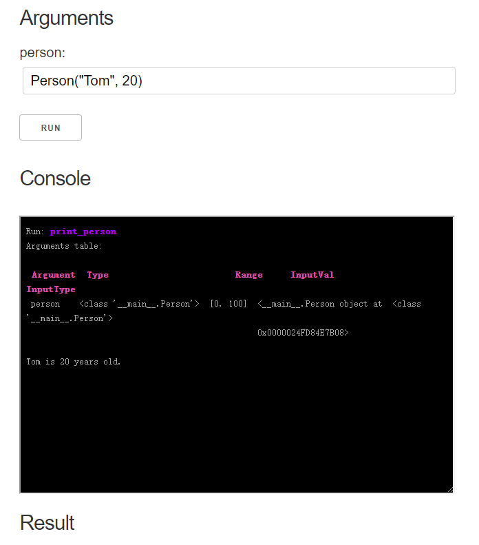
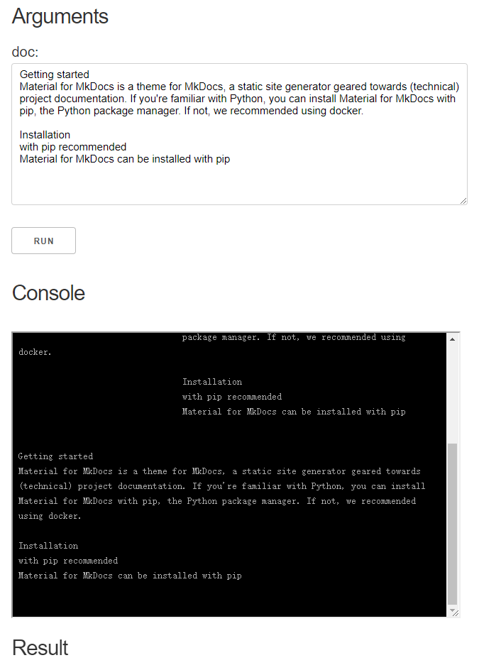

Type Extension
You can easily extend the argument types in oneFace.
Registration of type and range check
For example you have a custom Person class:
Register type check
This will allow oneface to check the type of the input parameter to make sure it is an instance of Person:
@one
def print_person(person: Person):
print(f"{person.name} is {person.age} years old.")
>>> print_person(["Tom", 10]) # Incorrect input type
Run: print_person
Arguments table:
Argument Type Range InputVal InputType
person <class '__main__.Person'> None ['Tom', 10] <class 'list'>
Traceback (most recent call last):
File "C:\Users\Nangu\Desktop\oneFace\tmp\test1.py", line 17, in <module>
print_person(["Tom", 10])
File "C:\Users\Nangu\miniconda3\envs\oneface\lib\site-packages\funcdesc\guard.py", line 46, in __call__
self.check_inputs(pass_in, errors)
File "C:\Users\Nangu\Desktop\oneFace\oneface\check.py", line 86, in check_inputs
raise CheckError(errors)
funcdesc.guard.CheckError: [TypeError("Value ['Tom', 10] is not in valid type(<class '__main__.Person'>)")]
Val.register_type_check also allow you to define a custom type checker, for example:
def check_person_type(val, tp):
return (
isinstance(val, tp) and
isinstance(val.name, str) and
isinstance(val.age, int)
)
Arg.register_type_check(Person, check_person_type)
This will not only check if the input value is an instance of Preson, but also ensure that its attributes are of the correct type:
>>> print_person(Person("Tom", "10")) # Incorrect age type
Run: print_person
Arguments table:
Argument Type Range InputVal InputType
person <class '__main__.Person'> None <__main__.Person object at 0x0000021B20DD2FD0> <class '__main__.Person'>
Traceback (most recent call last):
File "C:\Users\Nangu\Desktop\oneFace\tmp\test1.py", line 24, in <module>
print_person(Person("Tom", "10"))
File "C:\Users\Nangu\miniconda3\envs\oneface\lib\site-packages\funcdesc\guard.py", line 46, in __call__
self.check_inputs(pass_in, errors)
File "C:\Users\Nangu\Desktop\oneFace\oneface\check.py", line 86, in check_inputs
raise CheckError(errors)
funcdesc.guard.CheckError: [TypeError("Value <__main__.Person object at 0x0000021B20DD2FD0> is not in valid type(<class '__main__.Person'>)")]
Register range check
You can also register a range check for it, for example, to limit the age to a certain range:
Mark the range in argument annotation:
@one
def print_person(person: Val[Person, [0, 100]]):
print(f"{person.name} is {person.age} years old.")
This will limit the person's age in the range of 0~100:
>>> print_person(Person("Tom", -10))
Run: print_person
Arguments table:
Argument Type Range InputVal InputType
person <class '__main__.Person'> [0, 100] <__main__.Person object at <class '__main__.Person'>
0x000001E9148CAD30>
Traceback (most recent call last):
File "C:\Users\Nangu\Desktop\oneFace\tmp\test1.py", line 25, in <module>
print_person(Person("Tom", -10))
File "C:\Users\Nangu\miniconda3\envs\oneface\lib\site-packages\funcdesc\guard.py", line 46, in __call__
self.check_inputs(pass_in, errors)
File "C:\Users\Nangu\Desktop\oneFace\oneface\check.py", line 86, in check_inputs
raise CheckError(errors)
funcdesc.guard.CheckError: [ValueError('Value <__main__.Person object at 0x000001E9148CAD30> is not in a valid range([0, 100]).')]
Registration of interface widgets
If you want to generate the appropriate widget for your custom type, you should register it in the specific interface.
Register widgets in Qt interface
from oneface.qt import GUI, InputItem
from qtpy import QtWidgets
class PersonInputItem(InputItem):
def init_layout(self):
self.layout = QtWidgets.QVBoxLayout()
def init_ui(self):
self.name_input = QtWidgets.QLineEdit()
self.age_input = QtWidgets.QSpinBox()
if self.range:
self.age_input.setMinimum(self.range[0])
self.age_input.setMaximum(self.range[1])
if self.default:
self.name_input.setText(self.default.name)
self.age_input.setValue(self.default.age)
self.layout.addWidget(QtWidgets.QLabel("person:"))
name_row = QtWidgets.QHBoxLayout()
name_row.addWidget(QtWidgets.QLabel("name:"))
name_row.addWidget(self.name_input)
self.layout.addLayout(name_row)
age_row = QtWidgets.QHBoxLayout()
age_row.addWidget(QtWidgets.QLabel("age:"))
age_row.addWidget(self.age_input)
self.layout.addLayout(age_row)
def get_value(self):
return Person(self.name_input.text(), self.age_input.value())
GUI.register_widget(Person, PersonInputItem)

Register widgets in Dash interface
from oneface.dash_app import App, InputItem
from dash import dcc
class PersonInputItem(InputItem):
def get_input(self):
if self.default:
default_val = f"Person('{self.default.name}', {self.default.age})"
else:
default_val = ""
return dcc.Input(
placeholder="example: Person('age', 20)",
type="text",
value=default_val,
style={
"width": "100%",
"height": "40px",
"margin": "5px",
"font-size": "20px",
}
)
App.register_widget(Person, PersonInputItem)
App.register_type_convert(Person, lambda s: eval(s))
Warning
Currently, there is no good way to composite dash components. Here, for simplicity, we use the serialized input Person. The above code is not recommended for use in production environments. see issue#1

Another example: TextArea
Here we give another example of using TextArea to get long string input.
from oneface import one, Val
from oneface.dash_app import App, InputItem
from dash import dcc
class LongStrInputItem(InputItem):
def get_input(self):
return dcc.Textarea(
placeholder='Enter a value...',
value=(self.default or ""),
style={'width': '100%'}
)
App.register_widget(str, LongStrInputItem)
@one
def print_doc(doc: Val(str)):
print(doc)
print_doc.dash_app()

More details on the dash component definition can be found in the dash documentation.